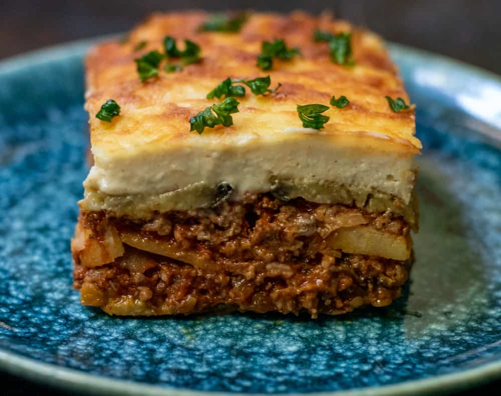

Mousaka

Delicious Mousaka !!!
Greek Moussaka (mousaka) is without a doubt, Greece's
most popular, traditional dish! You'll be hard pressed
to find a taverna that doesn't serve it or a household
that doesn't make it on special occasions! So what is
Moussaka? Moussaka is a traditional Greek eggplant
casserole made with baked or pan fried eggplants
(aubergines) and potatoes, a rich, tomatoey beef or lamb
mince sauce and topped off with a deliciously creamy
bechamel sauce. In other words, the ultimate comfort food.
Ingredients
- For the vegetables
- 3 potatoes
- 2 zucchinis
- 2 eggplants
- salt
- pepper
- For the ground meat
- 1 onion
- 2 tablespoons olive oil
- 1 clove of garlic
- 1 tablespoon of thyme
- 3 pinches of sugar
- 1 teaspoon cinnamon
- 1 tablespoon tomato paste
- 500g ground beef
- 400g canned tomatoes
- salt
- pepper
- 1/2 bunch of parsley
- 1/2 bunch of basil
- For the bechamel sauce
- 100g butter
- 100g all-purpose flour
- 750ml milk
- 1 pinch of nutmeg
- 100g grated parmesan cheese
- salt
- pepper
- 3 egg yolks
Steps
- For the vegetables
- Place a deep pan over high heat.
Add the sunflower oil and let it get hot.
- Peel the potatoes and slice them into thin rounds.
- Slice the eggplants and zucchini into thin rounds and
fry in a separate pan for 5-10 minutes.
- Remove with a slotted spoon and transfer to a baking pan
lined with paper towels. Allow to drain from excess oil.
- For the ground meat
- Place a pot over high heat and add the olive oil.
- Coarsely chop the onion and add to pan.
- Finely chop the garlic and add to pan along with thyme, cloves,
cinnamon and sugar. Sauté for 2-3 minutes until they caramelize nicely.
- Add the ground meat and break it up with a wooden spoon. Sauté until golden brown.
- Add the tomato paste and sauté so that it loses its bitterness.
- Add the chopped tomatoes, lower heat and simmer for 5-10 minutes until the sauce thickens.
- Remove from heat and add the parsley and coarsely chopped basil. Season with salt and pepper.
- For the bechamel sauce
- Place a pot over medium heat.
- Add the butter and let it melt.
- Add the flour and whisk until it soaks up all of the butter.
- Add the milk in small batches while continuously whisking so that no lumps form.
- As soon as the béchamel sauce thickens and bubbles start to form on the surface, remove from heat.
- Add the nutmeg, salt, pepper, 100 g parmesan and 3 egg yolks. Whisk thoroughly.
- To assemble
- Preheat oven to 180* C (350* F) Fan.
- In a 25x32 cm baking pan , spread a layer of potatoes, cover with a layer of eggplants and top with a layer of zucchini. Season in between layers.
- Add 2-3 tablespoons of béchamel sauce to the ground meat mixture and mix. Spread the ground meat over the vegetables.
- Cover with the béchamel sauce, spreading it evenly and sprinkle with 50 g of grated parmesan.
- Bake for 35-40 minutes.
- When ready, remove from oven and allow to cool.
- Serve with fresh herbs and olive oil.